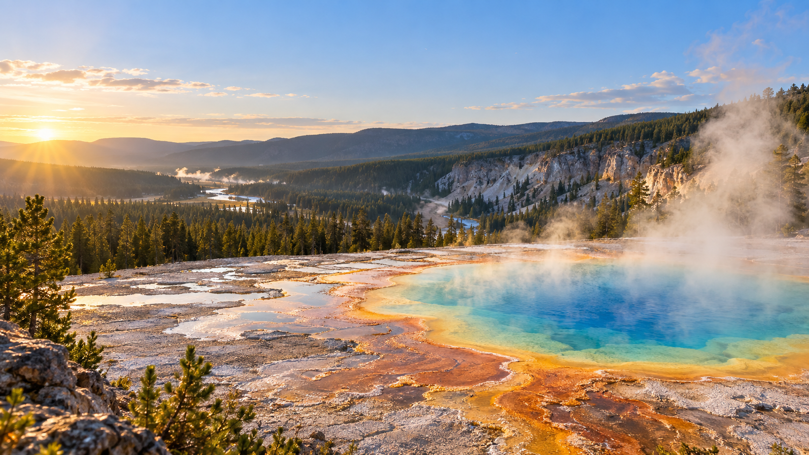
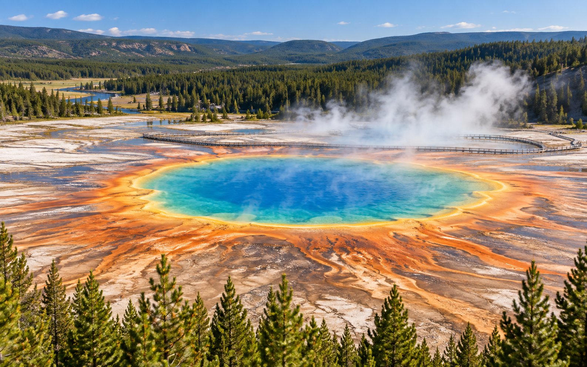
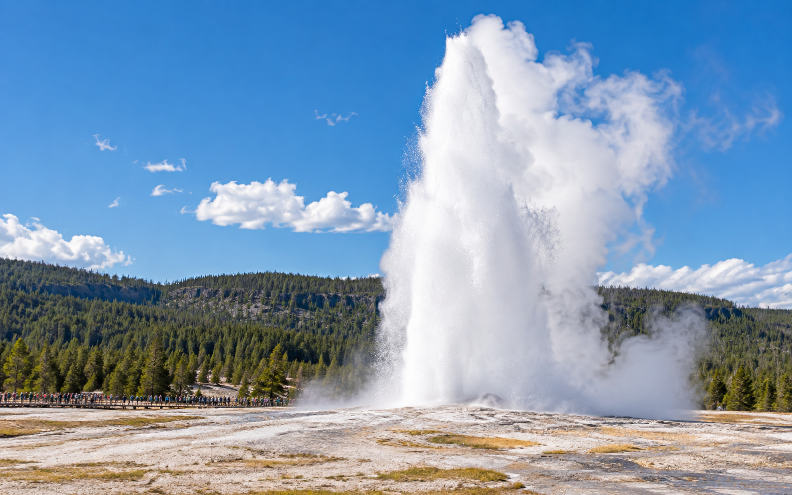
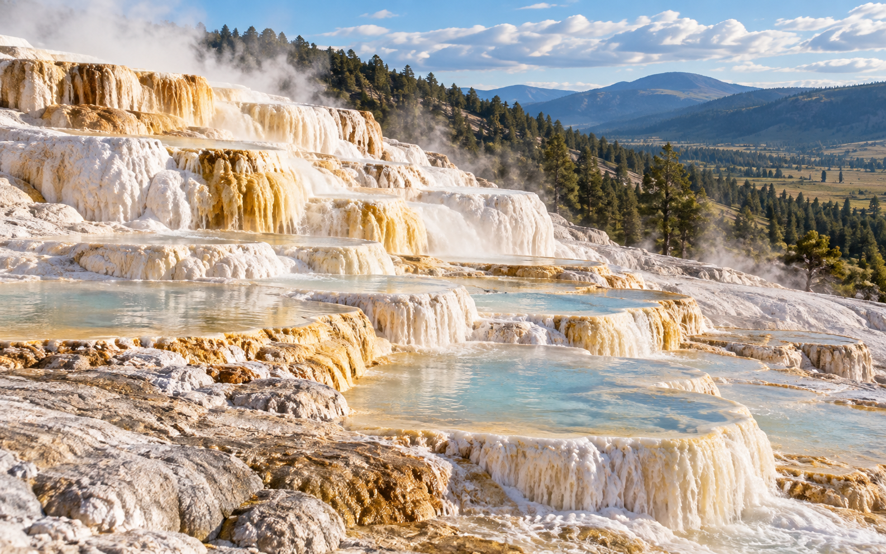
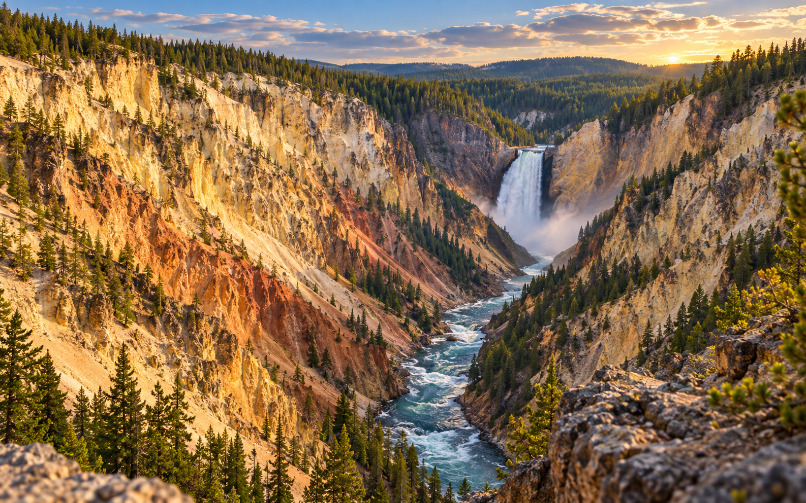

世界级地热景观
彩色温泉、喷气孔和间歇泉遍布公园，是黄石最有辨识度的旅行体验。

目的地概览
黄石的精彩不只在某一个景点，而在一路变化的地貌：热泉冒着蒸汽，河流切开峡谷，森林和草甸连接着湖泊与山脉。这里适合按区域游览，也适合用一条环线串起最经典的风景。
彩色温泉、喷气孔和间歇泉遍布公园，是黄石最有辨识度的旅行体验。
公园道路连接多个盆地、峡谷和湖区，适合按区域安排一天或多天行程。
观景步道、木栈道和停车点密集，新手游客也能轻松看到代表性景观。
核心景点

黄石最具辨识度的彩色热泉，蓝色泉心与橙黄色环带层层展开。清晨和傍晚光线柔和，观景体验更舒服。

黄石最有名的间歇泉之一，喷发较有规律。可以提前查看预测时间，把等待变成旅行的一部分。

白色石灰华台阶层层铺开，远看像自然形成的梯田。这里的色调安静，非常适合拍细节。

黄石河与瀑布穿过金黄色岩壁，视野开阔，适合放在一天行程的后半段作为收束。
推荐路线
先看最有视觉冲击力的彩色温泉，适合开启黄石之旅。
根据喷发预测安排停留，在游客中心附近休息补给。
走木栈道看石灰华台地，节奏比热门彩池区更放松。
在峡谷观景点看瀑布和岩壁，光线变化会让景色更有层次。
旅行提示
黄石面积很大，景点之间车程不短。不要把一天排得太满，预留停车和步行时间。
地热区地表脆弱且温度很高，务必沿规定步道行走，不要跨越护栏。
高海拔地区天气变化快，早晚温差明显，建议准备外套和防晒用品。
部分道路和设施会随季节关闭，出发前最好查看公园最新交通和服务信息。
路线地图
黄石的主干道围绕地热区、峡谷和湖区展开。用这张中文环线图，可以更快看清入口、路段和四个核心景点之间的关系。
彩色热泉位于麦迪逊与老忠实之间，是黄石最醒目的地热景观之一。
实用信息
黄石公园全年可以进入，但部分道路、游客中心和服务设施会根据季节、天气和施工情况调整开放。
入园仍需购买通行证；可提前购买，也可抵达入口站后现场购买，旺季建议预留排队时间。
北门、西门、南门、东门和东北门通往不同环线，第一次自驾可优先选择西门或北门作为起点。
温泉、喷气孔和间歇泉附近地表脆弱且高温，请留在木栈道和指定观景区域内。
非美国居民 16 岁及以上，如未使用年度通行证或联邦休闲地通行证入园，需另付每人 100 美元附加费；非美国居民年度通行证为 250 美元。经南门前往或离开时会经过大提顿国家公园，两座公园分别收费。
路况会因天气、施工、火情或野生动物活动快速变化，出发当天应再次确认道路状态。